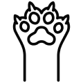

Эта порода в какой-то период оказалась на грани исчезновения, а сейчас в некоторых странах входит в пятерку самых популярных. Рассказываем об умном и ласковом «гиганте» и о том, как ухаживать за мейн-куном.
Уход за кошкой
У мейнских енотовых тяжелая шерсть, к тому же они довольно сильно линяют. Поэтому нужно вычесывать шубку не реже раза в неделю. Это необходимо не только «для красоты», но и для поддержания здоровья. Активно умываясь, кошка проглатывает слабые и мертвые волоски, они могут создавать проблему для ЖКТ, а регулярное вычесывание позволит предотвратить эту проблему.
Шерсть обычно гладкая, шелковая. Но когда начинает выглядеть засаленной или волокнистой, питомца пора купать. В среднем это требуется раз в месяц.
У мейн-кунов все большое, в том числе когти. Не всегда в домашних условиях они могут их эффективно сточить, поэтому стричь их необходимо примерно раз в месяц. Приучать к этому не очень приятному ритуалу стоит с детства.
Представители породы, как правило, сильные, здоровые животные. Это выражается и в продолжительности жизни. Но, как и у всех пород, у этих красавцев возможны определенные недуги.
- Крупная порода
- Дружелюбная и преданная
- Мягкий голос
- Величественная и мощная
- Требует ухода за шерстью несколько раз в неделю
- Негипоаллергенная порода
- Любит активные игры и прогулки
- Хорошо уживается с детьми и другими животными